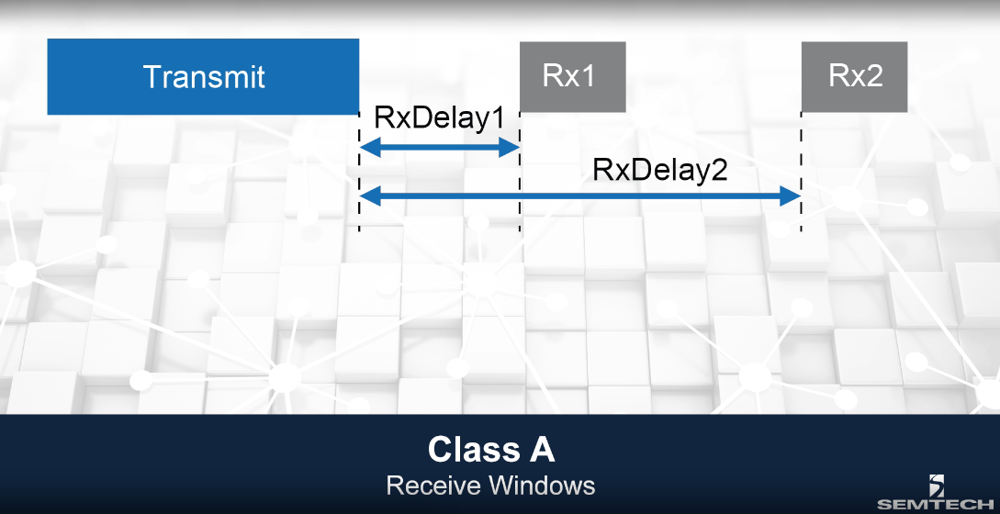

Dispositivos Finais
A rede LoRa, tecnologia derivada dos obstáculos de IoT, comporta dispositivos finais de diversas especificações técnicas. Em primeiro lugar, como um dos objetivos de IoT é acumular a maior quantidade de dados possíveis sobre diversas situações e aparelhos, entende-se que os dispositivos-finais que a rede LoRa tem o dever de atingir são sensores. Sensores esses que, em sua maioria, tem sua fonte de potência advinda de baterias e, portanto, há uma necessidade constante de reduzir seu custo de energia [1]. Para lidar com isso, foram criadas três classificações diferentes para os dispositivos finais, levando em conta o fator consumo de energia, assim como, integralmente com o protocolo LoRaWAN, foi desenvolvida a tecnologia Adaptive Data Rate (ADR).
Adaptive Data Rate (ADR)
A tecnologia ADR é parte das especificações do protocolo LoRaWAN [9]. Seu objetivo principal é ajustar as variáveis Spreading Factor (SF) e Transmission Power (TP) para equilibrar o consumo e a eficiência dos dispositivos finais, assim como controlar o uso dos canais de rádio.
Se um dispositivo final detecta que não está recebendo informações depois de uma série de transmissões uplink, ele entende que houve falha na conexão e resolve o problema aumentando o valor de seu Transmission Power para o máximo e, em seguida, caso ainda não haja resposta, aumenta seu Spreading Factor até o máximo, da mesma forma[9]. Essas mudanças permitem que o laço que conecta o dispositivo final tenha mais chance de ser refeito.
Um dispositivo final pode pedir à rede para monitorar a qualidade do uplink de recepções de um passado recente. Se as configurações para o Spreading Factor e para o Transmission Power forem muito maiores das utilizadas nas últimas N transmissões, a rede decide reduzir essas variáveis, de forma a reduzir o consumo de energia[9].
Classes de Dispositivos
- Classe A: Caracteriza a comunicação bidirecional entre dispositivo final e servidor . Nessa categoria, só se pode receber dados do servidor depois que as informações já foram enviadas, o que garante a maior eficiência energética dentre as três classes de LoRa[1]. Essa classe é recomendada para dispositivos de bateria reduzida pois garante um consumo reduzido de energia. Quando uma mensagem é enviada pelo dispositivo final por meio do uplink, uma janela Rx1 é aberta, pelo mesmo, para o recebimento de dados. A duração dessa janela deve ser, no mínimo, de mesmo valor que o tempo necessário para que o transceiver do dispositivo detecte um preâmbulo (do protocolo LoRaWAN) de download. Se, nesse período, um preâmbulo for detectado pelo dispositivo, o transceiver do mesmo continua ouvindo até que o pacote seja transmitido por inteiro. Entende-se que o pacote foi destinado para esse dispositivo se o final da recepção acontecer durante o tempo de duração da janela (Rx1). Caso contrário, o dispositivo final abre uma nova janela, Rx2, que se comporta da mesma forma, detectando o preâmbulo e recebendo o resto do pacote.li>

Funcionamento das Janelas da classe A[3]
- Classe B: Dispositivos de classe B abrem múltiplas janelas de recepção em tempos determinados. Para determinar quando uma janela será aberta, o dispositivo final detecta uma mensagem do tipo beacon enviada pelo módulo gateway. Essa mensagem está sendo enviada de acordo com especificações do servidor de Internet conectado à outra ponta do gateway. Desta forma, os dispositivos e o servidor passam a funcionar em sincronia. O número de janelas abertas entre um período de beacon é definido a partir do tempo de duração de uma janela, correlacionando ao tempo de um período de beacon. Por esses motivos, essa classe permite uma latência controlada à conexão, enquanto mantém níveis reduzidos de consumo de energia.
- Classe C: Dispositivos de classe C abrem apenas duas janelas de recepção, como os de classe A. A grande diferença é que a janela Rx2 só fecha quando o dispositivo for enviar pacotes por meio de seu uplink. Isso quer dizer que ele está sempre aberto para receber pacotes do gateway, reduzindo a latência para a transmissão de dados. Por outro lado, estar sempre esperando por pacotes ocasiona em um consumo muito mais elevade de energia do que os dos dispositivos de classe A, tornando a classe apenas recomendada para dispositivos com capacidade energética mais branda.
Funcionamento das Janelas da classe B[3]
Funcionamento das Janelas da classe C[3]
Vale ressaltar que, dentro das especificações da LoRa Padrão, cada módulo deve obrigatoriamente implementar o mecanismo de comunicação da Classe A. As especificações das demais classes são opicionais
Ativação do Dispositivo na rede LoRa
Um dispositivo final conectado a um servidor de Internet guarda quatro variáveis, sendo três, de sessão.[5] As variáveis de sessão são:
- End Device Address (DevAddr): Sequência de 32bits que identifica o dispositivo final na rede.
- NetWork Session Key (NwKSKey): Utilizada pelo dispositivo final e pelo servidor de Internet para gerar e verificar o código de mensagem íntegra (MIC). Além disso, é utilizada para criptografar e descriptografar o payload de mensagens puramente MAC.
- Application Session Key (AppSKey): Utilizada pelo dispositivo final e pelo servidor de Internet para criptografar payloads da aplicação.
Estrutura do End-Device Address[5]
no qual NwkID é utilizado para identificar a autoria da rede e NwkAddr é uma sequencia arbitrária de bits gerada pelo gerenciador do servidor de Internet[5]
A quarta variável é a Application Identifier AppEUI, que é explicada futuramente nesse tópico.
Over-The-Air-Activation
O processo de ativação Over-the-Air envolve uma troca de mensagens do tipo "Join Request" e "Join Accept" entre dispositivo final e servidor de Internet, mas, para estudar o processo, é necessário entender a personalização.
A personalização de um dispositivo envolve definir variáveis para, no futuro, transformá-las nas de sessão. Sao elas[3]:
- DevEUI: Identificador único (globalmente) do dispositivo final
- AppEUI: Identifica a entidade que processará o "Join Request"
- AppKey: Chave de root específica do dispositivo final usada para gerar senhas de sessão
Uma vez personalizado, o dispositivo final envia uma mensagem do tipo "Join request" ao servidor de Internet. Essa mensagem é composta por três elementos: AppEUI, DevEUI e DevNonce, sendo o último, uma série de bits gerados aleatoriamente pelo dispositivo final. Esses bits aleatórios são importantes pois o servidor de Internet bloqueia "join requests" com DevNonces já utilizados anteriormente pelo dispositivo. Isso impossibilita ataques do tipo "replay" que mandariam "join requests" com um DevNonce anterior, desconectando o dispositivo final alvo da rede.

Estrutura do Join Request[5]
Em seguida, caso o dispositivo final for aceito, o servidor de Internet envia uma mensagem de resposta do tipo "Join Accept", que é composta por um AppNonce de três octetos, por um identificador de rede (NetID), por um endereço único para o dispositivo no contexto da rede (DevAddress), por um campo que indica o RxDelay e uma lista opcional de canais de frequência(CFList)
A partir das variáves AppKey, AppNonce, NetID e DevNonce, o dispositivo final gera, utilizando a função de criptografia "aes128", as variáveis de sessão AppSKey e NwkSKey.
Estrutura do Join Accept[5]
OTAA no tempo[3]
Activation by Personalization
É possível associar um dispositivo final a uma rede LoRa sem passar pelo procedimento de ativação On-the-Air. Para isso, é preciso gerar os valores das variáveis de sessão AppSKey NwKSKey e DevAddr manualmente e guardá-las no dispositivo.